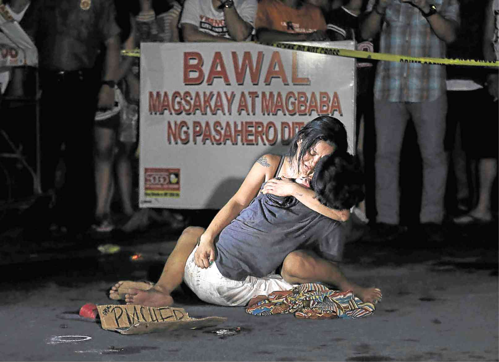
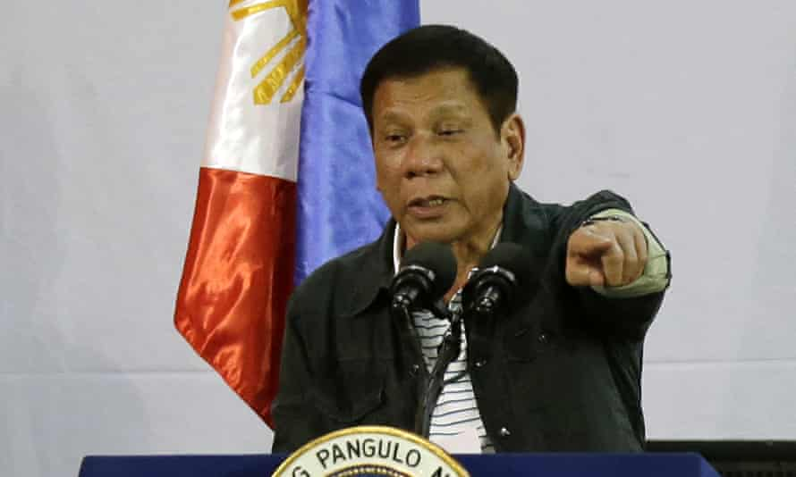
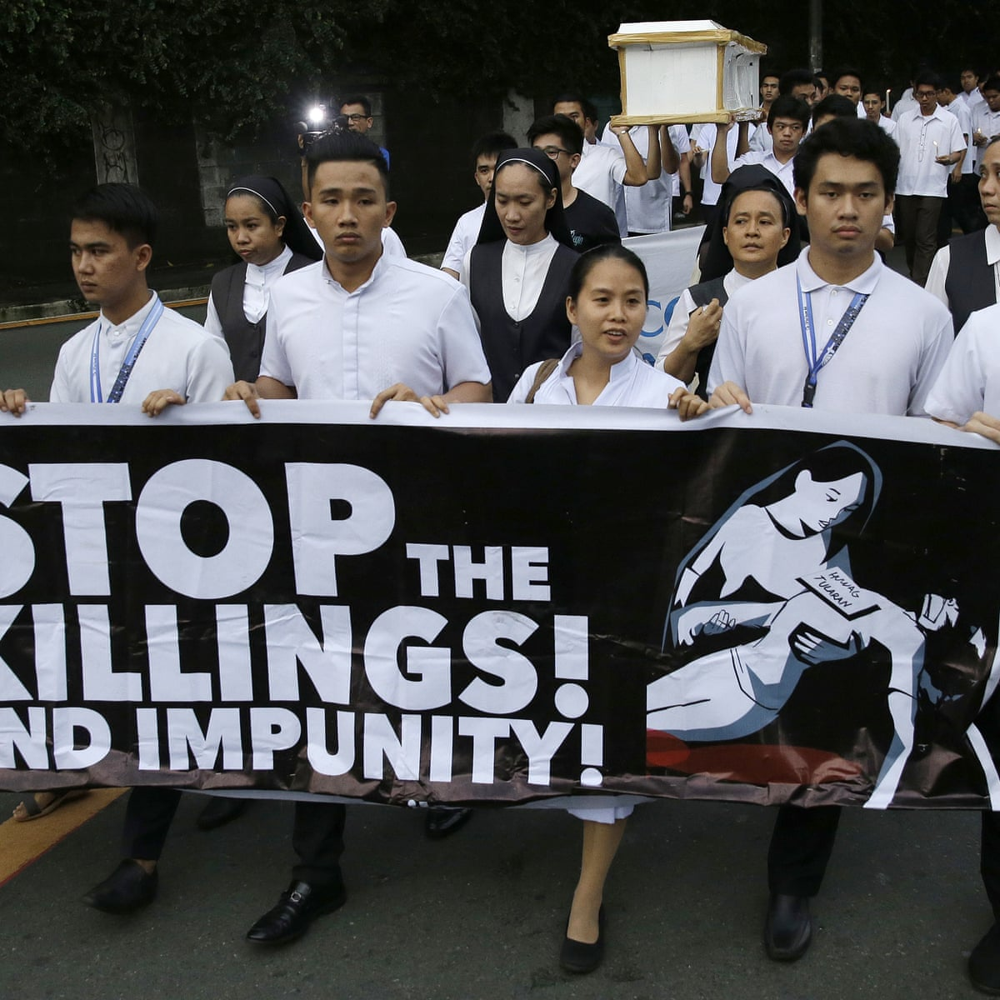
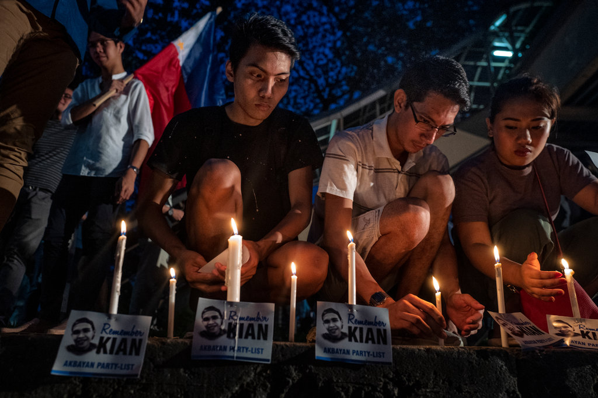
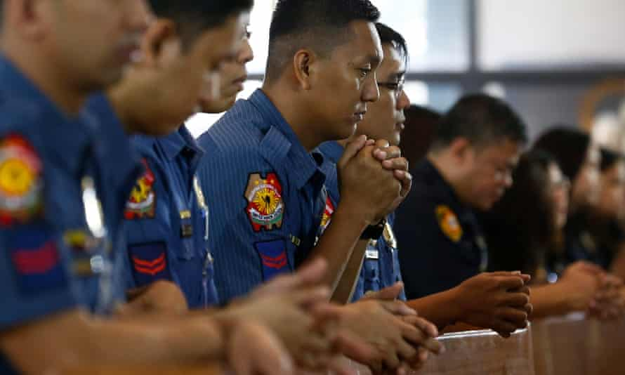
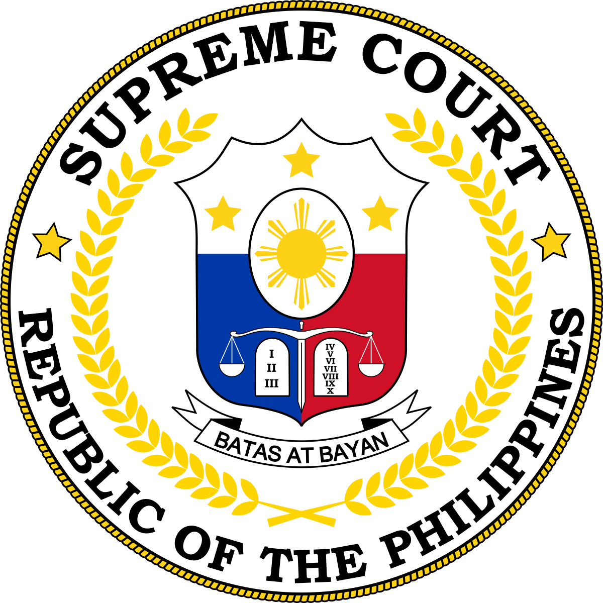

More than 7,000 killed in the Philippines in six months, as president encourages murder

More than 7,000 people were killed in the brutal ‘war on drugs’ in the Philippines between July 2016 and January 2017, under instruction from the country’s president, Rodrigo Duterte. Duterte ordered Philippines’ police forces to kill anyone they believe to be connected to the drugs trade when he assumed office in June 2016. State forces and vigilante groups have followed through these orders ruthlessly.According to police counts in the Philippines, 7,025 people were killed by the police or unknown armed attackers in the ‘war on drugs’ between 1 July 2016 and 30 January 2017. An average of 34 people a day died during the first six months of Duterte’s presidency, thanks to his hardline policy.Duterte is denying his citizens the right to life, as well as the right to equality before the law and a fair trial. We are calling for an urgent end to the state-sponsored killings, and for authorities in the Philippines to pursue fair means of bringing those who are alleged to have broken the law to justice.In-depth: Read our report for our full investigation - 'If you are poor you are killed': Extrajudicial Executions in the Philippines' 'war on drugs' (published January 2017)
A president sanctioning murder, bragging about killing

Rodrigo Duterte was only sworn in as president of the Philippines on 30 June 2016, but since then he has overseen the deaths of thousands of his civilians. He has extended the orders to kill until 2022, and has said that he’ll continue the crackdown for as long as he’s president.In an election campaign speech broadcast on national television on 5 June, Duterte encouraged citizens to kill suspected drugs dealers or users as a ‘duty’, and offered huge bounties to people who turn in drug dealers – ‘dead or alive’. He followed up with an all-out call-to-arms in his inauguration speech on 30 June, after he was elected as president. During his inauguration speech, the president also promised to ‘honour treaties and international obligations’ as well as domestic Philippine law. But he is currently doing the opposite by denying his citizens the right to life and so many other basic rights.Duterte has bragged that he himself has killed people, seemingly as means to reduce crime while he was Mayor of the city of Davao, before he became president. Anyone named on Duterte’s ‘kill lists’ or connected to using or selling drugs was asked to give themselves in to police custody. In the first month of his presidency, Duterte said that 120,000 people had handed themselves into the police, more than half of them with links to the drugs trade. But they are not safe in police custody, or indeed in prison.
Police are killing with impunity

When he took office, Duterte gave the police ‘shoot to kill’ orders against organised criminals and those who resisted arrest. His calls seemingly gave the police a free reign. ‘Kill lists’– names of people allegedly associated with using or trading drugs – dictate who the police are rounding up or hunting down. The police have been running a so-called ‘knock and plead’ campaign based on hunting down those allegedly involved in the drugs trade, finding people on unverified lists and storming their homes. There are reports that cases of mistaken identification have led to people with no connection to the drugs trade being murdered. We have heard reports of the police shooting dead unarmed people, including those prepared to surrender. There have been deaths in police custody. In some cases, police officers have colluded with paid killers and killed for financial incentives. Families of killed victims have been stolen from by police, or found police officers to have planted evidence relating to their loved one. The victims of all of these hunts and raids have mostly been young men from impoverished backgrounds. The ‘war on drugs’ is effectively a war on poor people. Meanwhile, not a single police officer has been prosecuted or dismissed from duty in relation to killings during police drug operations. Duterte has implied impunity for law enforcement officers who kill, saying that ‘police and soldiers will never go to prison, not on my watch’. Already overcrowded prisons are struggling, with one central Manila prison holding nearly five times more prisoners than it was built to house.
Incentivising police killings

Our research has found that police killings are driven by pressures from the top, including financial incentives for police who kill people allegedly involved with the drugs trade.
“We always get paid by the encounter…The amount ranges from 8,000 pesos (£130) to 15,000 pesos (£240)… That amount is per head. So if the operation is against four people, that’s 32,000 pesos (£514)… We’re paid in cash, secretly, by headquarters…There’s no incentive for arresting. We’re not paid anything. It never happens that there’s a shootout and no one is killed.”
The same police officer told us that some police have established a racket with funeral homes, who reward the police for every dead body sent to the funeral home. Witnesses told us that the police have also stolen from the victims’ homes, including objects of sentimental value.
Vigilantes paid to kill

'Riding in tandem', as the phenomenon is known locally, sees two motorcycle-borne people arrive, shoot their targets dead, and speed away. Two paid killers told us that they take orders from a police officer who pays them 5,000 pesos (£80) for each drug user killed and 10,000 to 15,000 pesos (£160 to £240) for each ‘drug pusher’ killed. Before Duterte took power, the paid killers said they had two ‘jobs’ a month. Now, they have three or four a week. The targets often come from unverified lists of people suspected of using or selling drugs drawn up by local government officials. Regardless of how long ago someone may have taken drugs, or how little they used or sold, they can find their names irrevocably added to the lists. Their names could be added arbitrarily because of a vendetta or because there are incentives to kill greater numbers of people deemed drug users and sellers.
The Philippines needs to return to the rule of the law

President Duterte must protect human rights – a pledge he made in his inauguration speech, and one that his government is obliged to meet under the country’s constitution and various international treaties it is signatory to. The Philippines government has a duty to actively protect the rights of its citizens – whether that is from violence from police or government forces or vigilante groups. The government must do all it can to reinstate the right to life and security of person for all citizens in the country. We are calling on President Duterte and his government to:
Immediately condemn all unlawful killings by police and call on law enforcement officials to abide by international law on the use of force
Conduct a prompt, impartial investigation into every lethal use of force by the police and ensure those responsible are brought to justice, through fair trials
Make sure all police activities are subjected to independent oversight and officers held accountable for their actions.